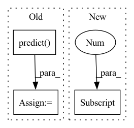

Pattern ID :17683

Before Change
x = x.numpy()
target = target.numpy()
y_pred = self.model.test_on_batch(x=x, y=target)
y = self.model.predict(x, verbose=0)
loss = y_pred[0]
accuracy = y_pred[1]
correct = tf.equal(tf.argmax(y, 1), tf.cast(target, tf.int64))
After Change
test_results = self.model.test_on_batch(x=x, y=target, reset_metrics=False)
logging.info("test_results = {}".format(test_results))
mlops.log({"Test/Loss": test_results[1], "round": args.round_idx})
mlops.log({"Test/Acc": test_results[0], "round": args.round_idx})
In pattern: SUPERPATTERN
Frequency: 3
Non-data size: 3
Instances
Fragment ID: 58330178
Project Name: fedml-ai/fedml
Commit Name: f0596a0b7173add589515ac589abbadd02f879c9
Time: 2022-08-14
Author: chaoyanghe.com@gmail.com
File Name: python/examples/cross_silo/tf-mqtt_s3_fedavg_mnist_lr_example/tf_model_aggregator.py
M Class Name: TfServerAggregator
N Class Name: TfServerAggregator
M Method Name: test(4)
N Method Name: test(4)
M Parent Class: ServerAggregator
N Parent Class: ServerAggregator
M File Name: python/examples/cross_silo/tf-mqtt_s3_fedavg_mnist_lr_example/tf_model_aggregator.py
N File Name: python/examples/cross_silo/tf-mqtt_s3_fedavg_mnist_lr_example/tf_model_aggregator.py
M Start Line: 29
M End Line: 44
N Start Line: 32
N End Line: 39
'>
Before Change
x = x.numpy()
target = target.numpy()
y_pred = self.model.test_on_batch(x=x, y=target)
y = self.model.predict(x, verbose=0)
loss = y_pred[0]
accuracy = y_pred[1]
correct = tf.equal(tf.argmax(y, 1), tf.cast(target, tf.int64))
// metrics["test_correct"] += tf.reduce_mean(tf.cast(correct, tf.float32))
metrics["test_loss"] += loss
After Change
test_results = self.model.test_on_batch(x=x, y=target, reset_metrics=False)
logging.info("test_results = {}".format(test_results))
mlops.log({"Test/Loss": test_results[1], "round": args.round_idx})
mlops.log({"Test/Acc": test_results[0], "round": args.round_idx})
'>
Fragment ID: 58330179
Project Name: fedml-ai/fedml
Commit Name: 2f09d098b1ff604f1c408a26250fccf4364fdf1f
Time: 2022-08-14
Author: chaoyanghe.com@gmail.com
File Name: python/examples/cross_silo/tf-mqtt_s3_fedavg_mnist_lr_example/tf_model_aggregator.py
M Class Name: TfServerAggregator
N Class Name: TfServerAggregator
M Method Name: test(4)
N Method Name: test(4)
M Parent Class: ServerAggregator
N Parent Class: ServerAggregator
M File Name: python/examples/cross_silo/tf-mqtt_s3_fedavg_mnist_lr_example/tf_model_aggregator.py
N File Name: python/examples/cross_silo/tf-mqtt_s3_fedavg_mnist_lr_example/tf_model_aggregator.py
M Start Line: 29
M End Line: 44
N Start Line: 32
N End Line: 39
'>
Before Change
Prediction accuracy
pred = self.predict(x).detach().cpu()
label = torch.where(y.T)[1]
return (pred == label).detach().float().mean().tolist()
After Change
Prediction accuracy.
return true[range(pred.shape[0]), pred.squeeze(-1)].detach().mean().item()
'>
Fragment ID: 58330177
Project Name: omicsml/dance
Commit Name: 0e70e4a8267eb2dbba694b513b54b95fb6dfecf4
Time: 2022-11-22
Author: 36778645+RemyLau@users.noreply.github.com
File Name: dance/modules/single_modality/cell_type_annotation/actinn.py
M Class Name: ACTINN
N Class Name: ACTINN
M Method Name: score(3)
N Method Name: score(3)
M Parent Class: nn.Module
N Parent Class: nn.Module
M File Name: dance/modules/single_modality/cell_type_annotation/actinn.py
N File Name: dance/modules/single_modality/cell_type_annotation/actinn.py
M Start Line: 214
M End Line: 216
N Start Line: 214
N End Line: 214